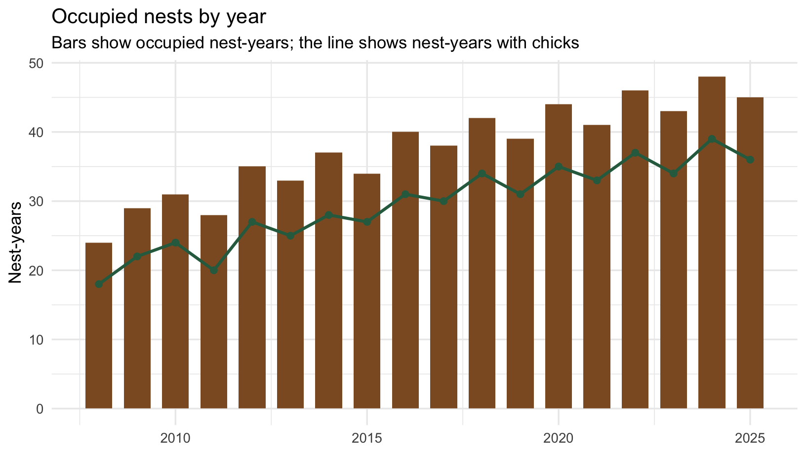
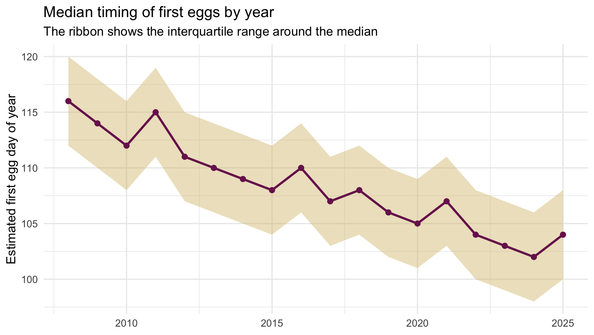
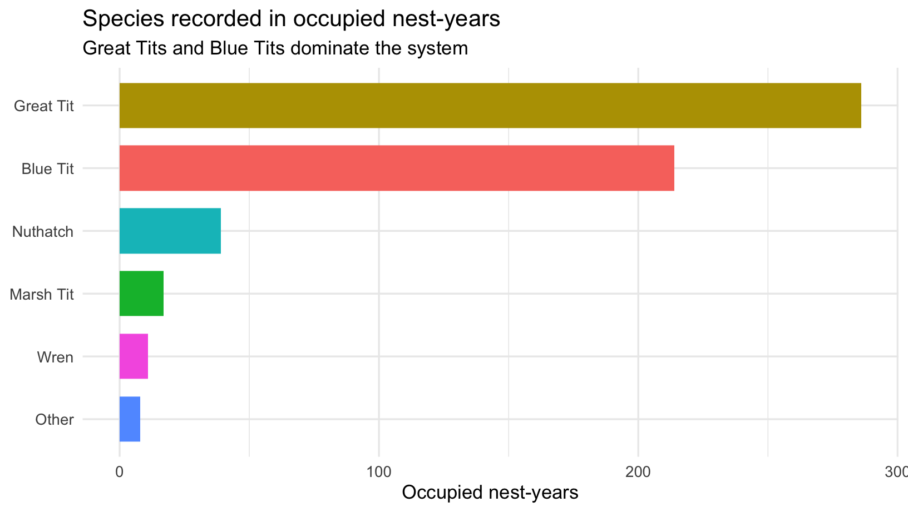

SDU Nest Box Project
The SDU Nest Box Project is a long-term field study of breeding birds in nest boxes on and around the University of Southern Denmark campus. It combines simple repeated field observations with long-term ecological questions about breeding phenology, occupancy, reproductive output, and year-to-year environmental variation.
At a glance
Years monitored
18
Nest boxes
64
Nest visits
1,850+
Occupancy peak
48 nests
Median first egg
Day 109
About the project
The project follows nest boxes through spring and early summer to record when birds begin breeding, how many nests are occupied, when eggs appear, when chicks hatch, and how breeding progresses across the season. Because the same box system has been monitored across many years, the project provides a compact but informative long-term record of breeding ecology in a local woodland landscape.
This work matters for both research and teaching. It supports field-based training for students, provides a platform for final-year and undergraduate research projects, and creates a long-term dataset that can be used to ask ecological questions about variation in breeding timing and reproductive performance.
Photos
Add project photo here
images/nest-box-project/fieldwork.jpg
Add project photo here
images/nest-box-project/nest-boxes.jpg
What the project records
Typical field observations include:
- whether a nest box is empty or occupied
- nest-building stage
- eggs and chicks
- species identity where known
- timing of breeding events
- broad breeding outcomes
Together, these observations make it possible to describe both single breeding seasons and broader long-term changes in phenology and nest-box use.
Long-term summaries
Occupancy by year
Timing of first eggs

Species using the boxes

Research outputs
The nest box project has supported ecological field research, student theses, and teaching-led data collection. This section can be expanded over time as outputs accumulate.
Selected papers
- Add journal article citation here.
- Add journal article citation here.
- Add methods or field-note publication here.
Bachelor theses
- Add bachelor thesis title, student name, and year here.
- Add bachelor thesis title, student name, and year here.
- Add bachelor thesis title, student name, and year here.
Why it matters
Long-term monitoring of a simple nest-box system makes it possible to see how breeding timing, occupancy, and reproductive outcomes vary between years. That continuity gives the project value well beyond a single field season: it supports ecological inference, student training, and public-facing biodiversity engagement from the same core dataset.
Participation and contact
The project has involved many students and volunteers over time. If you are interested in the project as a student, collaborator, or volunteer, please get in touch through the Contact page.
Animal welfare and ethics
Nest-box monitoring is carried out with care to minimise disturbance. Any ringing activities are conducted under the relevant permits and in accordance with Danish animal welfare legislation.